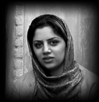

|
|
|
Browsing
Contact Us |
Campaigners |
Face to Face |
Tribune |
Interview |
News |
On the Web |
One Million |
Report
Farsi | Français | German | Italian | Spanish | العربية Also in this section
|
 Is Change Possible?By: Raheleh Asgarizadeh Monday 18 February 2008 Translated by: Sussan Tahmasebi Note: This article was written by Raheleh Asgarizadeh, about her experience of engaging in face-to-face discussions and collecting signatures in support of the Campaign’s petition, which asks the Iranian Parliament to reform laws which are discriminatory against women. Raheleh was arrested along with Nasim Khosravi while collecting signatures in support of this same petition, on Thursday February 14, 2007, in Park Daneshjoo, following a street theater performance, as part of the International Fajr Festival, on the subject of women’s rights. Raheleh and Nasim are currently being held in Evin’s Public Ward 3, in relation to their peaceful activities in support of women’s rights. Tired from a long day at work, I was standing on the bus, when a young woman’s voice caught my attention. She was speaking to a little girl and was trying to convince the girl to give her a kiss. "You seem to love children so…." the girl’s mother said. The young woman let out a heavy sigh. "I have a girl, who is about the same age as your daughter. It’s been 2 years since I’ve seen her." Everyone was starring at her in disbelief, as she continued: "I got an uncontested and mutually agreed upon divorce from my husband, but he took my two year old daughter and left the country, taking her to a place where I would never be able to see her again…" — "You didn’t want custody…," I asked. — "Yes, but I didn’t have anyone who could help me, no connections…," she replied. I took one of the legal pamphlets out of my purse and asked if she had heard of the One Million Signatures Campaign. She took the booklet and said that she had not heard of the Campaign. A middle aged woman, wearing a chador, asked if she could have a booklet, to take home and read, as well. Pleased with the request, I gave her one. The women on the bus slowly started to talk, and even the ones who had remained silent at first, began to tell the tales of their domestic problems and pains. "I have a relative who is very rich, but he is unwilling to even buy clothes for his wife and children. Lately, it seems that he has taken on a temporary wife (Sigheh) who has 2 children of her own. He is more than willing to spend money on this new wife. The first wife, despite repeated please and attempts at ending her husbands relationship with this new woman, has finally come to realize that her husband has no intention of ending his temporary marriage to his second wife. So the first wife has just resigned herself to her fate and no longer objects….," explained a middle aged woman on the bus. "It is stories like this that give women a bad name. If you could only understand how terribly they view a divorced woman. It is horrific…poverty and moral corruption, have destroyed the lives of many," explained a young woman on the bus. "After years of disagreements and fighting because of her husband’s cheating, one of my relatives recently got a divorce, but what a divorce. After years of building a life together, she has gotten a divorce, but she has been awarded no money or financial support. No money, no resources, and 3 young children, she has been left alone in this big city," explained another woman. The first young woman turned to me and asked: "if I sign this petition, do you think that someday we will be able to change things? I want to collect signatures in support of the petition as well. I have endured and experienced the pain that exists in our society, and I believe that this will turn out to be a positive development in my life. I miss my child so much… The woman in the chador took the petition and signed it. "I wish that god gives you much success. You are doing something very important." She then turns her sympathetic gaze onto the young woman who is bewitched by the little girl on the bus… Message:1 |